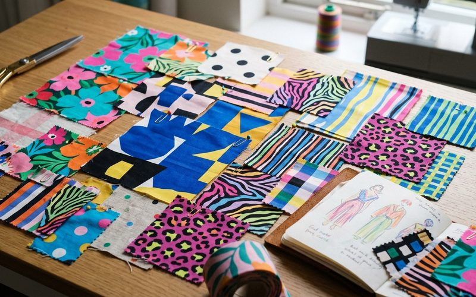

A combinação de estampas é uma das habilidades mais valorizadas no estilo pessoal, e também uma das mais temidas. Existe o mito de que misturar estampas é uma receita para o caos visual, mas a realidade é outra: com algumas referências básicas de teoria da cor e composição visual, misturar estampas se torna não apenas possível, mas uma das formas mais interessantes de expressar personalidade através da roupa.
Em brechós, essa habilidade ganha ainda mais relevância. As peças garimpadas frequentemente têm estampas que não existem mais nas coleções atuais, florais em escalas incomuns, listras em cores inesperadas, geometrias que remetem a décadas específicas. Saber como combiná-las abre um universo de possibilidades de estilo que nenhuma loja de fast fashion consegue oferecer.
Para começar, o caminho mais seguro é o da âncora: uma peça estampada acompanhada de uma cor sólida retirada da própria estampa. Se a blusa tem flores em tons de terracota e verde musgo, a calça pode ser terracota ou musgo. Essa técnica cria coesão visual imediata e permite que a estampa brilhe sem criar ruído. É o ponto de partida para quem está aprendendo a usar estampas com mais liberdade.
Quando você decide misturar duas estampas, o critério mais importante é a diferença de escala. Uma estampa grande combinada com uma pequena cria contraste visual interessante sem competição. Listras finas com um floral miúdo funcionam. Um xadrez grande com uma bolinhas pequenas funciona. O problema aparece quando você combina duas estampas de escala similar, aí sim o olho não sabe onde pousar.
Uma dica prática: ao misturar estampas, mantenha ao menos uma cor em comum entre as duas peças. Esse ponto de conexão é o que faz o conjunto parecer intencional em vez de acidental. Uma blusa listrada em azul e branco com uma saia floral que tem azul nos detalhes funciona porque o azul é a ponte entre as duas.
Uma das revelações do estilo contemporâneo é que o animal print funciona como neutro. Uma calça de onça combina com listras, com florais e com geométricos sem criar conflito visual, desde que a paleta de cores seja harmoniosa. É o tipo de combinação que parece ousada mas, na prática, é bastante estável. Em brechó, encontrar peças de animal print de qualidade, em tecido com caimento real, não em sintético rígido, é um achado que vale o garimpo.
A liberdade com estampas é, no fundo, uma questão de confiança. Quanto mais você experimenta, mais o olho se educa e a mão fica leve na combinação. E o brechó é o espaço ideal para essa experimentação: com um orçamento menor, você pode arriscar mais, descobrir o que funciona para o seu estilo, e construir uma relação com a moda que é genuinamente sua.